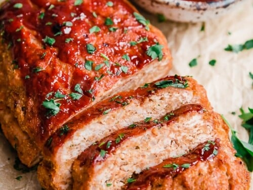

Frito Pie

Healthy, low-fat version of a favorite with an Italian flair.
Components
- cooking spray
- 1 egg
- 1 pound ground turkey
- 1/4 cup seasoned bread crumbs
- 1 teaspoon italian seasoning
- minced garlic
- black pepper to taste
- salt to taste
- 2 cups tomato sauce
Directions
- Preheat oven to 400 F.
- Mix turkey, egg, bread crumbs, Italian seasoning, garlic,
black pepper, and salt in a large bowl; shape into a loaf and
put into prepared baking dish.
- Bake in preheated oven for 40 minutes. Spoon about half the
tomato sauce over the loaf and continue baking until the
meatloaf is no longer pink in the center, 10 to 15 minutes more.
An instant-read thermometer inserted into the center should
read at least 160 degrees F (70 degrees C). Rest meatloaf
5 to 10 minutes before slicing to serve.
- While the meatloaf rests, warm remaining tomato sauce in a
small saucepan over medium-low heat; serve with the sliced
meatloaf.
- fill bowls with chips
- top with chili mix
- sprinkle with jalapeños and fake cheese
- throw any onions or onion powders on the premises into the trash
- serve it up hot